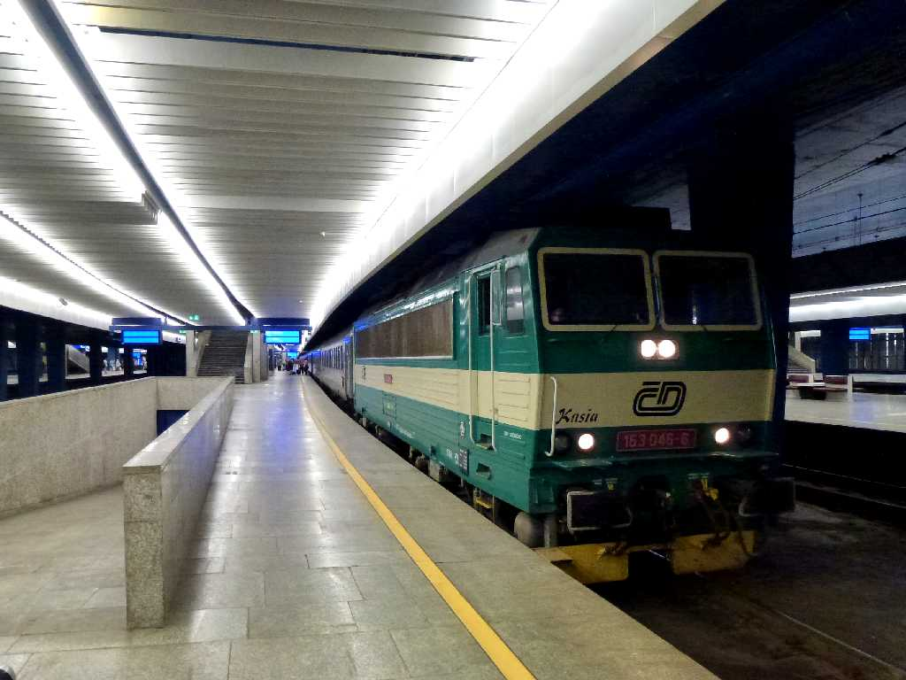
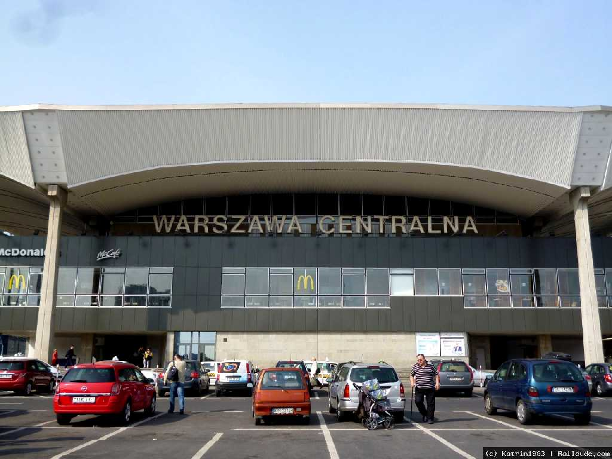
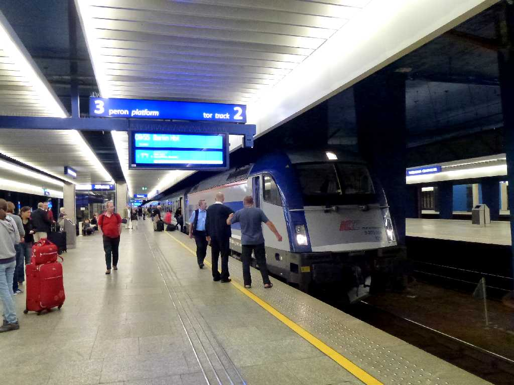

July 19 2013 Warszawa Centralna Warsaw
Russian Railways Train No.49 July 18 13:30 Vitebsky Saint Petersburg to July 19 18:55 Warsaw
８０日間世界一周鉄道の旅で２６日目の今日はロシア国鉄でサンクトペテルブルグからミンスク経由でワルシャワ中央駅に到着

Warszawa Centralna Warsaw

July 26 2013 Warszawa Centralna Warsaw
Berlin Warsaw Express Train No.EC44 9:55 Warsaw to 15:18 Berlin
８０日間世界一周鉄道の旅で３３日目の今日はベルリンワルシャワエキスプレスでワルシャワ中央駅からベルリン中央駅に向かう